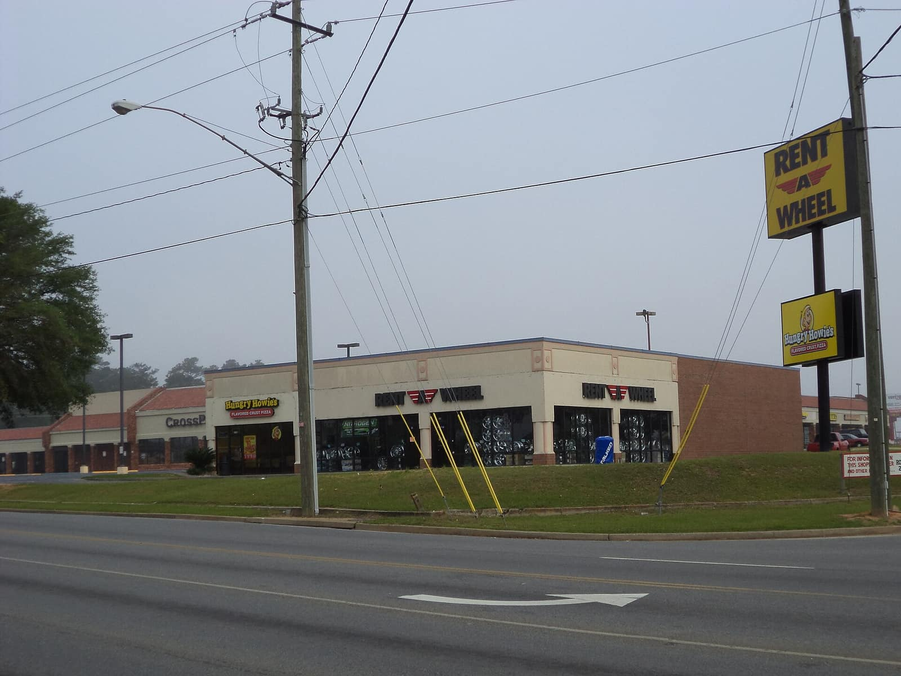
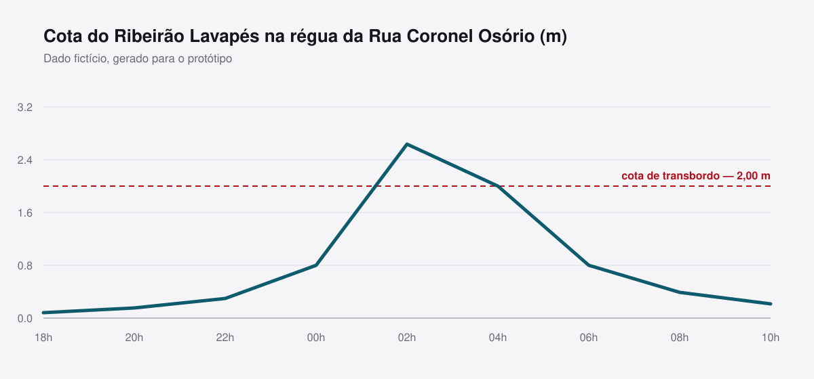

Reportagem especial
As 118 lojas que fecharam no Centro
Três anos de queda no comércio de rua, contados quarteirão por quarteirão.

Reportagem especial
Seis meses depois da enchente que atingiu 214 casas, a Gazeta refez o caminho da água — e a das promessas.
Texto: Camila Nogueira Franco e Thiago Marcondes Leme · Fotos: Everton Machado Lisboa · Arte: André Pizzolato Neves · 28.07.2026
Role para ler
Capítulo 1
Choveu 118 milímetros em quatro horas na noite de 11 de janeiro. É mais do que a média do mês inteiro. A régua da Rua Coronel Osório marcava 0,42 metro às 18h. Às 2h da madrugada, marcava 2,64.
Entre esses dois números cabem 214 casas alagadas, 38 comércios, dois quilômetros de rua tomados e a noite mais longa da história recente do bairro. Ninguém morreu — e quase todo mundo com quem conversamos usou a mesma frase para explicar por quê: “deu tempo de subir”.
Deu tempo porque o Lavapés já alagou antes. Em 2011, em 2016, em 2020. As famílias mais antigas têm um protocolo não escrito: quando a água encosta no meio-fio da esquina da Rua Barão, sobe o colchão. Quando cobre o meio-fio, sobe a geladeira. Quando entra no quintal, sai de casa.

Capítulo 2
A Gazeta bateu de porta em porta nas 214 casas registradas pela Defesa Civil. Encontrou moradores em 187 delas. Em 19, ninguém atendeu depois de três tentativas em dias e horários diferentes. Oito estavam vazias, com o portão soldado ou a placa de aluga-se desbotando.
Dos 187 domicílios que responderam, 141 disseram ter recebido algum tipo de auxílio — cesta básica, colchão, kit de limpeza. Trinta e dois receberam o auxílio-moradia municipal de R$ 900 mensais. Onze afirmaram não ter recebido nada e não saber a quem recorrer.
A gente perdeu tudo em uma noite e passou seis meses perdendo de novo, um documento por vez.
A perda de documentos apareceu em 94 das 187 entrevistas. Sem RG, sem comprovante de residência, sem carteira de trabalho, o morador não consegue provar que morava ali — e é a prova de residência que destrava quase todo benefício.
A Prefeitura montou um posto de reemissão no ginásio do bairro em fevereiro, que funcionou por seis semanas. Depois disso, quem precisou teve de ir ao Poupatempo em Atibaia. São duas conduções, um dia de trabalho perdido e, para muita gente, R$ 30 que não sobram.

Capítulo 3
Nos dez dias seguintes à enchente, três esferas de governo anunciaram recursos para o Lavapés. Somados, os anúncios chegaram a R$ 41,6 milhões. Seis meses depois, o que efetivamente saiu do caixa e virou obra, serviço ou benefício pago é de R$ 6,3 milhões.
O maior item da diferença é o piscinão de contenção anunciado em fevereiro: R$ 24 milhões, ainda sem projeto executivo. A Secretaria de Obras informou que o estudo hidrológico foi contratado em maio e tem prazo de entrega para setembro.
O segundo maior é a desapropriação das 22 casas da área de risco iminente, orçada em R$ 8,4 milhões. Até o fechamento desta reportagem, nenhuma havia sido desapropriada. Seis famílias já saíram por conta própria.
Anunciado × executado, em seis meses
Procurada, a Prefeitura afirmou que “obras estruturais têm ritmo distinto de ações emergenciais” e que o cronograma do piscinão será apresentado até outubro. O Governo do Estado não respondeu aos pedidos de informação enviados em 3 e em 17 de julho.
Capítulo 4
O plano diretor de drenagem, entregue em 2018 e nunca integralmente implantado, prevê três reservatórios de amortecimento na bacia do Lavapés. Nenhum foi construído. O documento estimava, à época, R$ 61 milhões para o conjunto — hoje, corrigido, algo em torno de R$ 104 milhões.
Engenheiros ouvidos pela reportagem são unânimes num ponto: intervenções pontuais no leito do córrego empurram o problema rio abaixo. “Desassoreamento é manutenção, não é solução. Ajuda numa chuva de 40 milímetros e não muda nada numa de 118”, resume a engenheira hidráulica Rosana Belluco Tinoco, professora de uma universidade da região.
A próxima estação chuvosa começa em outubro. Segundo o Centro de Gerenciamento de Emergências, a probabilidade de repetição de um evento de 118 milímetros em quatro horas na bacia é de aproximadamente 4% ao ano — o que significa, na prática, uma vez a cada 25 anos. O Lavapés alagou quatro vezes em quinze.
Na Rua das Palmeiras, dona Nair mantém a geladeira sobre um estrado de madeira de 40 centímetros desde janeiro. Perguntada se pensa em tirar, respondeu que não. “Tiro em maio. Depois que passar.”
Editorias da Gazeta
Seções especiais
Sua conta e institucional
Assuntos em alta
Buscas recentes